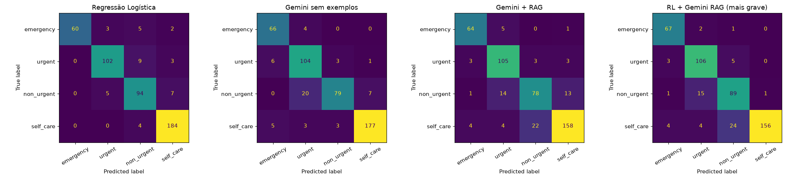

Triagem de sintomas com o corpus NHS Health A-Z
Guilherme Moll · Processamento de Linguagem Natural 2026/2 · FURB · Trabalho da Unidade 4, modalidade B · repositório
Chat que recebe a descrição de um sintoma e devolve o nível de urgência e os trechos do NHS, o serviço de saúde do Reino Unido, que tratam do assunto. O nível vem de um classificador treinado nos textos do NHS e, com uma chave do Gemini, um LLM traduz a mensagem e escreve a resposta a partir dos trechos encontrados. Não é aconselhamento médico.
Como usar
- Abra o chat e confirme o aviso.
- Cole uma chave gratuita da API do Gemini, criada no Google AI Studio.
A chave fica só nesta aba (
sessionStorage) e vai do navegador direto para a API do Google, sem servidor no meio, e o uso conta na cota da chave. - Escolha o modo no topo: Rápido responde cada mensagem sozinha, e Com memória lembra a conversa, até 10 mensagens.
- Em cada resposta, "O que o modelo fez" mostra as probabilidades e os trechos recuperados.
Problema
Quem sente um sintoma costuma procurar na internet sem saber se precisa de pronto-socorro, de consulta ou se pode esperar. Para cada condição o NHS publica "care cards" que separam os sinais por urgência, emergência (999 ou A&E), urgente (NHS 111), não urgente (clínico geral) e autocuidado. O projeto da Unidade 1 usa esses textos para estimar a urgência de uma mensagem livre e mostrar a fonte.
Dados e metodologia
Corpus
O corpus da Unidade 1 e da Etapa Prática 1 tem 24.159 passagens das páginas do NHS Health A to Z, em inglês, extraídas do JSON-LD e do HTML. Depois da limpeza e da remoção de duplicatas ficam 18 mil passagens, e as que vêm de care cards trazem o nível de urgência dado pelo NHS, usado como rótulo.
Unidade 3
BoW, TF-IDF, Word2Vec e BERT foram comparados em clusterização, busca e classificação numa amostra de 4.000 passagens. O TF-IDF com Regressão Logística teve o melhor F1 macro (0,914) e foi o único que separou os clusters por urgência.
Unidade 4
- O Gemini traduz a mensagem para inglês, com saída em JSON.
- O TF-IDF + Regressão Logística da Unidade 3 dá a probabilidade de cada nível, em JavaScript com os pesos exportados do scikit-learn.
- Uma busca TF-IDF por cosseno traz os 5 trechos mais próximos entre as 18 mil passagens, a parte de recuperação do RAG.
- O Gemini recebe a mensagem, o nível do classificador e os trechos, e responde em JSON com nível, texto e fontes usadas, só com base nos trechos.
- Quando o classificador e o Gemini discordam, a página mostra o nível mais grave, regra proposta na Unidade 3 porque o classificador rebaixava emergências.
No modo Rápido, cada mensagem passa sozinha por esse fluxo, e é o modo usado na avaliação. No modo Com memória, o primeiro passo reescreve a mensagem em inglês completando com as mensagens anteriores, e a resposta do Gemini também recebe a conversa. Assim, "quais remédios podem ajudar?" depois de "estou com dor na perna" chega à busca e ao classificador como "What medications can help with leg pain?".
Resultados
O conjunto de teste é o da Unidade 3, 478 linhas de care cards (20% estratificado), 70 delas de emergência, e os trechos do teste ficaram fora do índice da busca. O classificador foi treinado de novo com um tokenizador que o JavaScript repete e o F1 ficou igual ao da Unidade 3 (0,914).
| Abordagem | Acurácia | F1 macro | Recall de emergência | Emergências rebaixadas |
|---|---|---|---|---|
| TF-IDF + Regressão Logística | 0,921 | 0,914 | 0,857 | 10 de 70 |
| Gemini sem exemplos | 0,891 | 0,881 | 0,943 | 4 de 70 |
| Gemini + RAG | 0,847 | 0,847 | 0,914 | 6 de 70 |
| Mais grave entre a Regressão Logística e o Gemini + RAG, usado no site | 0,874 | 0,875 | 0,957 | 3 de 70 |

Frases novas
Acertos nas 8 frases em inglês da Unidade 3 e em 8 frases em português.
| Regressão Logística sem tradução | Regressão Logística após tradução pelo Gemini | Gemini + RAG | Mais grave | |
|---|---|---|---|---|
| Inglês | 6 de 8 | 6 de 8 | 7 de 8 | 7 de 8 |
| Português | 2 de 8 | 6 de 8 | 8 de 8 | 8 de 8 |
Frases em português com a tradução do Gemini.
| Entrada | Tradução | Esperado | Regressão Logística | Gemini + RAG |
|---|---|---|---|---|
| estou com uma dor forte no peito que vai para o braço esquerdo | I have severe chest pain that goes to my left arm | Emergência | Emergência | Emergência |
| meu filho está com febre alta e manchas que não somem quando aperto um copo nelas | my son has a high fever and spots that do not fade when I press a glass against them | Emergência | Autocuidado | Emergência |
| estou vomitando sangue | I am vomiting blood | Emergência | Emergência | Emergência |
| minha perna está inchada, vermelha e doendo cada vez mais | my leg is swollen, red, and hurting more and more | Urgente | Não urgente | Urgente |
| tenho tosse há mais de três semanas | I have had a cough for more than three weeks | Não urgente | Não urgente | Não urgente |
| tenho me sentido triste há algumas semanas e não melhora | I have been feeling sad for a few weeks and it's not getting better. | Não urgente | Não urgente | Não urgente |
| estou com dor de garganta há dois dias, mas consigo comer e beber | I've had a sore throat for two days, but I can eat and drink | Autocuidado | Autocuidado | Autocuidado |
| torci o tornozelo, está um pouco inchado mas consigo andar | I sprained my ankle, it's a bit swollen but I can walk | Autocuidado | Autocuidado | Autocuidado |
Técnicas da Unidade 4
| Tecnologia ou abordagem | Usada? | Aplicação ou justificativa |
|---|---|---|
| LLMs e modelos de linguagem | Sim | Gemini (gemini-3.5-flash-lite, API) traduz a mensagem, classifica e escreve a resposta |
| Prompt engineering e saídas estruturadas | Sim | Prompt com a definição dos 4 níveis do NHS e esquema JSON nas duas chamadas, uma para a tradução e outra para nível, resposta e fontes |
| RAG e recuperação de informações | Sim | Busca TF-IDF nas 18 mil passagens, os 5 trechos mais próximos vão no prompt e a resposta cita as páginas |
| Agentes e integração com ferramentas | Não | O fluxo é fixo (traduzir, classificar, buscar, responder), sem decisão sobre qual ferramenta chamar |
| Modelos locais ou quantizados | Não | O classificador roda no navegador, mas é TF-IDF com Regressão Logística, não um modelo de linguagem |
| Processamento multimodal | Não | O corpus é só texto |
| Outras técnicas avançadas | Não |
Avaliação
1. Em que medida os objetivos foram alcançados?
O objetivo da Unidade 1 era um assistente que recebe a descrição de um sintoma, estima a urgência e traz o que o NHS publica citando a fonte, e o chat faz isso em português para quem tem uma chave do Gemini. Não houve teste com usuários, e os serviços citados nos trechos continuam sendo os do Reino Unido, adaptados para o Brasil só pelo prompt.
2. Quais técnicas foram mais adequadas?
No conjunto de teste o TF-IDF + Regressão Logística teve o melhor F1 macro (0,914). Em triagem o erro mais grave é rebaixar uma emergência, e o Gemini rebaixou menos (4 de 70, contra 10 de 70 da Regressão Logística). A regra do mais grave rebaixou só 3 emergências com F1 menor (0,875), porque sobe o nível de casos menos graves, e é a regra usada no site.
3. Os LLMs trouxeram melhorias ou novas possibilidades?
Sim. A Regressão Logística acertou 2 de 8 frases em português e 6 de 8 depois da tradução pelo Gemini. Nas frases em inglês fora do estilo do NHS o Gemini + RAG acertou 7 de 8, como a mancha que não some sob o copo, que a Regressão Logística chamou de autocuidado. A resposta em texto com as fontes também não existia antes.
O RAG não melhorou a classificação, no teste o Gemini + RAG (F1 0,847) ficou abaixo do Gemini sem exemplos (0,881). O primeiro trecho recuperado tem o mesmo nível do texto em só 48% dos casos, já que o mesmo sintoma aparece com níveis diferentes em páginas diferentes (falta de ar é emergência numa página e urgente em outra). Quando esse trecho vem com o nível errado o Gemini + RAG acerta 72%, contra 85% sem os trechos. No site o RAG serve para basear a resposta e citar as páginas, e o nível final é o mais grave entre o classificador e o Gemini.
4. Quais são as principais limitações?
Os rótulos e o teste são linhas de care cards escritas pelo NHS, mensagens reais são mais longas e vagas e o teste com elas ficou em 16 frases escritas por mim. O Gemini é acessado por API e depende de chave, de cota e da versão do modelo, e na avaliação a temperatura 0 não garante a mesma resposta sempre. O corpus é do Reino Unido e em inglês, e o site baixa 8,7 MB de trechos na primeira visita.
5. Como a qualidade foi verificada?
- Acurácia, F1 macro e recall de emergência nos 478 textos de teste, com as matrizes de confusão, e os trechos do teste fora do índice da busca.
- 16 frases novas, em inglês e português, com o nível esperado definido antes de rodar.
- As probabilidades do classificador em JavaScript são iguais às do scikit-learn até a 4ª casa nas frases de conferência do notebook.
- As respostas do Gemini usadas na avaliação estão salvas em
cache_gemini.json.
6. Aprimoramentos futuros
- Busca por embeddings de frases com um modelo treinado para similaridade, já que o BERT sem ajuste da Unidade 3 não serviu.
- Trechos da mesma condição agrupados por nível no prompt, no lugar dos mais parecidos soltos.
- Um NER biomédico para reconhecer sintomas na mensagem.
- Teste com mensagens reais, revisadas por um profissional de saúde.
Limitações e custos
- Os serviços citados nos trechos (999, 111, GP) são do Reino Unido, e o prompt pede ao Gemini que troque por SAMU 192, UPA e posto de saúde.
- O classificador só conhece inglês, por isso a mensagem passa antes pela tradução do Gemini, e sem a chave do Gemini o chat não responde.
- Os rótulos são linhas curtas de care cards escritas pelo NHS, e mensagens de pacientes são mais longas e vagas.
- A avaliação do Gemini usou o conjunto de teste e 16 frases escritas por mim, sem teste com usuários.
- O Gemini é chamado duas vezes por mensagem, na cota da chave de quem usa, e o
flash-litetem cota gratuita no AI Studio.
Referências e informações técnicas
- Dados: NHS.UK Health A to Z, conteúdo sob Open Government Licence v3.0.
- Python: scikit-learn 1.9 (TF-IDF, Regressão Logística, métricas), NLTK 3.9 (stopwords), pandas, matplotlib. Unidade 3 também com gensim, transformers (
bert-base-uncased), spaCy e VADER. - LLM: Google Gemini
gemini-3.5-flash-litepela API RESTgenerateContent, temperatura 0,responseSchemaem JSON. - Site: HTML e JavaScript sem bibliotecas, publicado no GitHub Pages.
- Código e notebooks: unidade4 no repositório.
- Uso de IA generativa: Claude Opus 5.5 (Anthropic), pelo Claude Code, no código do notebook e do site, em uso_de_ia.txt.